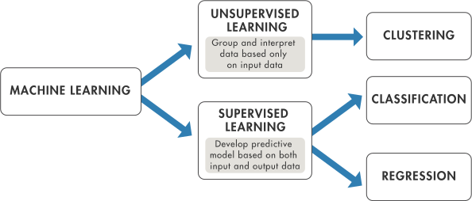

class: center, middle # Introduction to Machine Learning <h3 style="color:#0312a5">Yeji Park</h3> --- # Contents <br/> <h3 style="color:#0312a5", align="center">Machine Learning</h3> <h3 style="color:#0312a5", align="center">Train and Test Data</h3> <h3 style="color:#0312a5", align="center">Derivation</h3> <h3 style="color:#0312a5", align="center">Least Square</h3> --- class: center, middle # Machine Learning --- class: middle ## Definition > A computer program is said to learn from experence **E** with respect to some class of tasks **T** and performance measure **P**, if its performance at tasks in **T**, as measured by **P**, <span style="background-color:rgba(240, 128, 128, 0.334)">**improves**</span> with experience **E** > --- *Mitchell* --- class: middle ## Learning Task * Ability to perform a task and gather experience during performing the tasks <br/> <br/> <p style="text-align:center"></p> --- class: middle * Three Machine Learning Tasks * Classification -- --- class: middle * Three Machine Learning Tasks * Regression <p style="text-align: center"></p> * Estimation of the probability <p style="text-align: center"></p> --- class: middle ## The Performance Measure > <p style="color: burlywood">How to: measure the difference with the training sets and the test sets</p> * For classification tasks >: Measure classification error or the accuracy of the algorithm <p style="text-align:center"><img src="classification_error.png"></p> --- class: middle * For regression tasks >: Measure mean error(i.e. MSE) $$\text{MSE} = \frac{1}{n} \sum_{i=1}^{n} (Y_i - \hat{Y}_i)^2$$ > where `\(Y_i\)` is actual outputs and `\(\hat{Y}_i\)` is predicted outputs. -- <br/> * For proaility estimation functions >: Measure the mean value of the logarithm of the probability -- <br/> <h3 style="text-align:center">We want to know how well the algorithm performs </h3> --- class: middle ## The Experienece <p style="text-align:center"><img src="Machine-Learning-Explained1.png" width="600" height="450"></p> <p style="text-align: center">The algorithm gathers experience from a data set which is labled </p> --- class: center, middle <br/> <br/> <img src="Machine-Learning-Explained2.png" width="600" height="450"> The algorithm gathers experience from a data set which is independent on any variables --- class: center, middle <br/> <br/> <img src="Machine-Learning-Explained3.png" width="600" height="450"> The algorithm not only experiences a data set but also interacts with an environment --- class: center, middle # Train and Test Data --- class: middle <p style="font-size: 20pt">Notice</p> <div id="yeji"> The training and test data sets need to come from <b>the same provavility distribution</b> and are <b>independent and identically distributed(IID)</b> </div> <br/> * Test error estimates using the training error as a surrogate. The training error is represented as: \begin{align} \text{Training Error} = \frac{1}{m} \sum\_{i=1}^m L(y\_i, f\_{\hat{\omega}}(x\_i)) \end{align} > where `\(L\)` is the Loss function and `\(m\)` is the number of samples. * If the number of test sets is small, estimating performance using like the above method can't work well. We can incorporate Cross-validation. --- class: middle ## Irreducible Error, Bias and Variance `\(\rightarrow\)` You might think that the estimated error must go to zero to optimaze the model <p style="text-align:center ; color:orange ; font-size: 20pt" > but it is not always proper.</p> - Consider the three notions - Irreducible error > : We can't control this error because we don't know realistic reponse. It can be caused due to spurious data and measurement error. - Squared Bias >: How closely the model's <b>average</b> prediction over all possible training sets. \begin{align} \text{SB}(f\_{\hat{\omega}}(x)) = f\_{\omega\_{true}} - f\_{\bar{\omega}}(x) \end{align} - Variance >: How much the model's prediction fluctuates with different training sets. --- class: center, middle <div style="background-color: rgba(100, 148, 237, 0.267)"> <h3> Low complexity \( \rightarrow\) High Bias or Low Variance</h3> </div> --- class: middle ## Bias-Variance Trade off <p style="font-size: 20pt">REMIND</p> > * Bias Error: The difference btw the average prediction and real value > * Variance Error: How much the predictions for a fiven point vary The bias-variance trade-off(dillema) can be represented by MSE as : $$\text{MSE} = Bias^2 + Vaiance + Irreducible Error$$ > Proof. $$ \text{MSE} = E[(y - \hat{f})^2] $$ >> The function with noise is : $$ f = y + \epsilon, E[f] = f $$ >> Variation is defined : $$ V(x) = E(x^2) - (E(x))^2 $$ --- class: middle >> rearrange it : $$ E(x^2) = V(x) + (E(x))^2 $$ >> MSE is: \begin{align} E((y - \hat{f})^2) =& E((y - f + f - \hat{f})^2) \\\ =& E(\epsilon^2 + (f - \hat{f})^2 + 2\epsilon(f - \hat{f})) \\\ \end{align} > \begin{align} \text{MSE} =& V(y - \hat{y}) + (E(y-\hat{y}))^2 \\\ =& (E(y - y - \epsilon)) + V(\epsilon^2) \end{align}